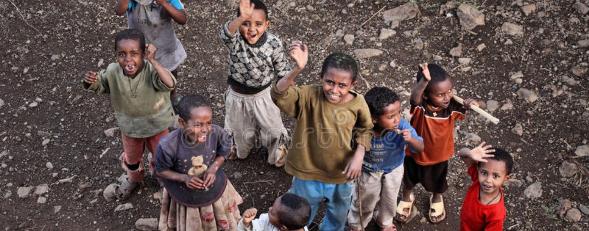

Visi
menciptakan generasi bangsa yang cinta akan Tuhan yang selalu berprinsip dan berpegang teguh dalam firman Tuhan terus mau berinovasi dan berkarya demi kemuliaan Tuhan, melahirkan generasi yang mencerminkan kepribadian firman Tuhan.
-Caleb steve dinoto-
Misi
Membangun 1000 gerjea di plosok-plosok daerah dan memenangkan 5.000.000 jiwa dalam 3 tahun. memberi 1.000.000 anak pendidikan sampai S1 bagi yang tidak mampu.
-Caleb Steve Dinoto-
v
v